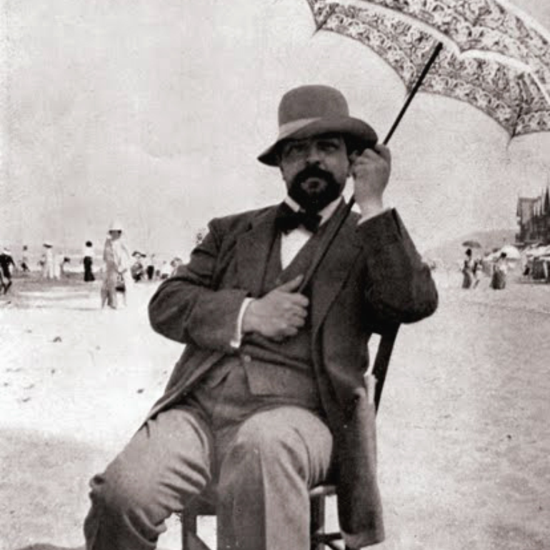
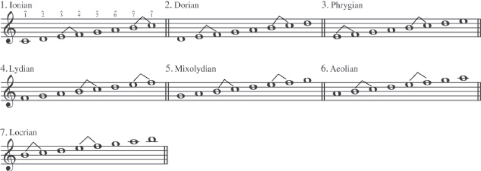

An Introduction to Post-Tonal Music
Materials and Techniques
Chapter 26
What does Post-Tonal mean?
Music composed since the general decline of tonal harmony (ca. 1900) that does not follow traditional tonal conventions.
Post-Tonal Music
- As the tonal system was being stretched to its limits, composers began to explore new methods and concepts.
- The following basic elements of music were ripe for significant modification and development
- Scales (Why only major and minor?)
- Chord Structure (Why only tertian?)
- Harmonic Successions (Does V have to go to I)
- Rhythm & Meter (Can we have shifting rhythmic feels?)
- Texture (What new timbres can we achieve?)
Post-Tonal Music
- We will see two broad paths unfolding in post-tonal harmony.
- Ultrachromaticism - extending the principles of harmonic progressions and voice leading that we have looked at
- a reaction against chromatic excess - composers looking at pre-tonal music, folk music, and maybe non-western musics.
Impressionism
- The term impressionism was first applied to a style of painting that sprang up in France in the late 19th century.
- It is most often associated with the work of Claude Monet (1840–1926) and his contemporaries.
- The primary aim of the artist was that of evoking a certain mood or atmosphere, using light and color in nontraditional ways.
Impressionism
- This concept was reflected in music by a turning away from more orderly formal procedures of the late 18th and early 19th centuries
- and a fascination with color, as expressed through harmony, instrumentation, and the use of rhythm.
Claude Debussy
- Claude Debussy (1862–1918) is considered by many to have made some of the most significant contributions to the evolution of early-twentieth-century musical thinking.
- His compositional style reveals departures from previous practices that, though easily accessible to the tonally oriented ear, clearly defy traditional tonal expectations.
Claude Debussy
Claude Debussy
Debussy, “La Fille aux Cheveux de Lin,” from Preludes, Book I
- Notice the clear suggestion of G♭ major
- But:
- The opening two measures outline an E♭m7 chord, whose function is unclear.
- The first cadence (mm. 2–3) is plagal and thus avoids functional use of the leading tone.
- The progression beginning in m. 5, obscures the G♭ tonal center.
Scale Materials
The Diatonic Modes
- One reaction to the chromatic saturation of the late nineteenth century was a renewed interest in the diatonic modes.
- The simplest way to represent each of the modes is by using the tones of the C major scale, but with a tone other than C serving as the tonal center for each mode.
The Diatonic Modes
- The seven modes can be transposed to all 12 major keys
- Each mode is characterized by a unique arrangement of whole steps and half steps
The Diatonic Modes
We can arrange the modes based on "brightness". (according to the number of major or augmented intervals above the tonal center)
- Locrian
- Ionian
- Mixolydian
- Dorian
- Aeolian
- Phrygian
- Locrian
Pentatonic Scale
- Pentatonic - a five-note scale (ANY five-note scale)
- Five-note scales have played a significant role in music, particularly non-Western music, for centuries.
- The three most common pentatonic scales are:
- Major Pentatonic
- Minor Pentatonic
- Hirajoshi
Pentatonic Scale
- Pentatonic - a five-note scale (ANY five-note scale)
- Five-note scales have played a significant role in music, particularly non-Western music, for centuries.
- The three most common pentatonic scales are:
- Major Pentatonic ( 1 2 3 5 6 )
- Minor Pentatonic ( 1 ♭3 4 5 ♭7 )
- Hirajoshi ( 1 2 ♭3 5 ♭6 )
Pentatonic Scale
- All three pitch collections may be viewed as subsets of a diatonic scale.
- The Major Pentatonic Scale has no half-steps or tritones.
- Consequently, there is no leading tone.
- Any one of its tones can be made to serve as a tonal center. Here are the modes of a major pentatonic:

What does Mode 5 sound like? Minor Pentatonic!
Debussy, Nuages
(start at top of page 6 in score
Synthetic Scales
- The pitch collections we have discussed so far bear a clear resemblance to scales or fragments of scales associated with the diatonic system.
- Post-tonal composers have also, however, made extensive use of synthetic scales.
- The available variety of synthetic scales is limited only by your imagination.
Synthetic Scales
- Let's look at three scales that are interesting because of their symmetrical structure.
- Whole tone ( 1 2 3 ♯4 ♯5 ♯6 )
- Octatonic ( 1 ♭2 ♭3 ♮3 ♯4 5 6 ♭7 )
- Hexatonic ( 1 ♭2 3 4 ♯5 6 )
Debussy, “Voiles,” from Preludes, Book I
Ninth, Eleventh, and Thirteenth Chords
Just as superimposed 3rds produce triads and seventh chords, continuation of that process yields ninth, eleventh, and thirteenth chords.

Ninth, Eleventh, and Thirteenth Chords
Thirteenth (C13 = A)
Eleventh (C13 = F)
Ninth (C13 = D)
Seventh (C13 = B♭)
Fifth (C13 = G)
Third (C13 = E)
Root (C13 = C)
Franck: Violin Sonata
Krystian Zimerman (piano), Kaja Danczowska (violin)